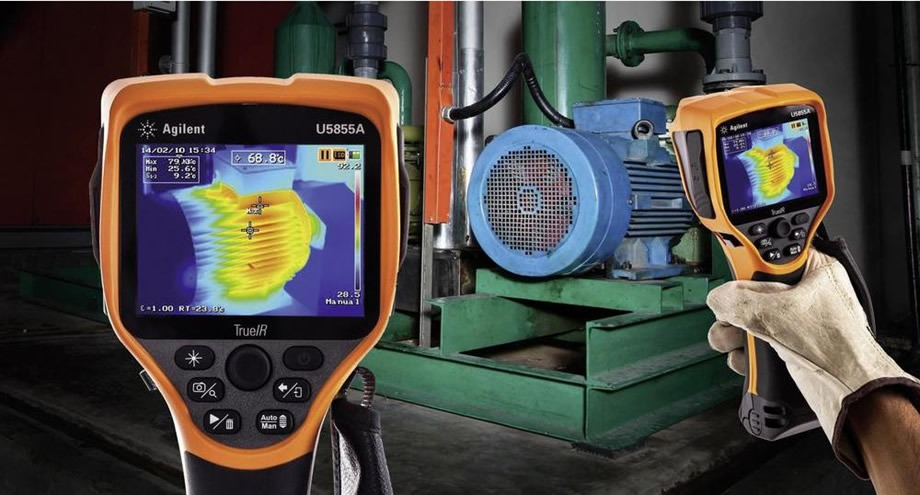
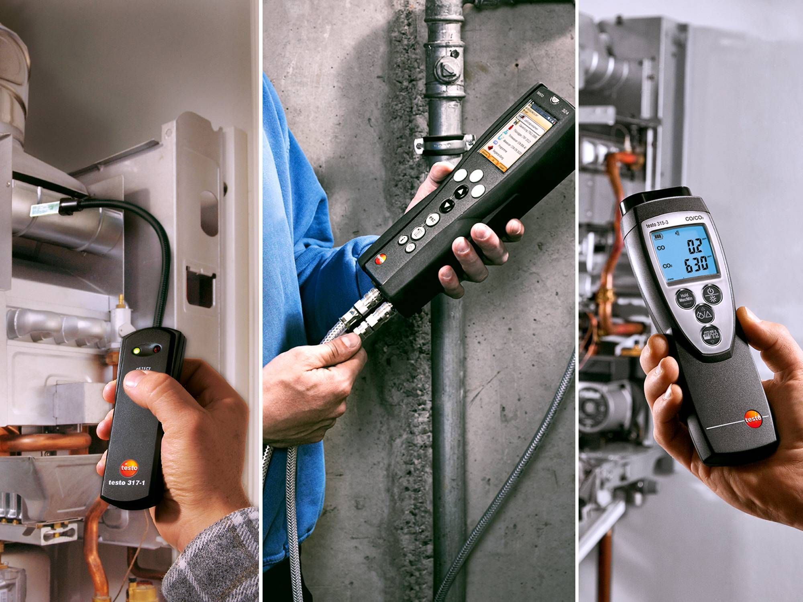

Termografia
- Aplicaciones de la termografía
- Termodinámica, conceptos básicos
- Teoría y bases de la tecnología infraroja
- Tipos de cámara, de que están constituidas y que se toma en cuenta para adquirir un equipo
- Procedimientos para utilizar una cámara, sus cuidados, indicaciones para tomar termogramas fiables y realizar reportes precisos

Analisis de gases
- Tipos de gases
¿Cuáles gases son explosivos? ¿Cuáles son tóxicos?
- Límites de explosividad y toxicidad
Como medimos los gases explosivos y tóxicos y bajo que parámetros
- Métodos de diagnóstico
Identifique la forma más adecuada para checarlos. Hay muchos métodos pero ¿Cuál debemos adoptar?
- Oxígeno
Rangos permisibles del oxígeno en nuestro ambiente y consecuencias al desempeño del trabajador.
-
Factores que influyen para que se genere una explosión
- Riesgos de toxicidad en el ser humano.
Qué alarmas existen y que nos indica cada alarma
Manejo de equipo de carga
- Conocimiento de patín hidráulico.
- Manejo de carga.
- Terminología del patín hidráulico.
- Despiece
- Análisis de componentes mecánicos y fallas
- Ensamble adecuado de piezas mecánicas en el chasis.
- Análisis externo de la unidad hidráulica
- Fugas en unidades hidráulicas y las diferentes causas (retenes, empaques, pistón, cilindro, etc.)
- Sistema de ascenso y descenso
- Sistema de válvulas (ajuste y reparación), válvulas desajustadas (de posición neutral y similares).